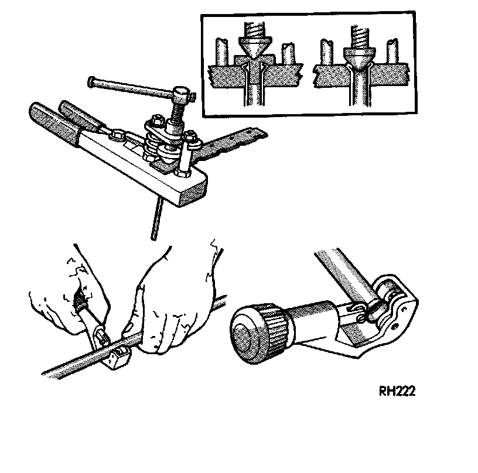

Brake Hose/Line: Service and Repair
GENERAL INFORMATIONMopar preformed metal brake line is recommended and preferred for a]l repairs. However, double-wall steel line can be used for emergency repair when factory replacement parts are not readily available. Special, heavy duty tube bending and flaring equipment is required to prepare double wall brake line. Special bending tools are needed to avoid kinking or twisting metal brake line. In addition, special flaring tools are needed to provide the inverted-type, double flare required on metal brake lines.
Cutting And Flaring Of Brake Fluid Tubing:

FLARING PROCEDURE
1. Cut off damaged tube with Tubing Cutter.
2. Ream cut edges of tubing to ensure proper flare.
3. Install replacement tube nut on section of tube to be repaired.
4. Insert tube in flaring tool. Center tube in area between vertical posts.
5. Place gauge form over the end of the tube.
6. Push tubing through flaring tool jaws until tube contacts recessed notch in gauge that matches tube diameter.
7. Squeeze flaring tool jaws to lock tubing in place.
8. Insert plug on gauge in the tube. Then swing compression disc over gauge and center tapered flaring screw in recess of compression disc.
9. Tighten tool handle until plug gauge is seated on jaws of flaring tool. This will start the inverted flare.
10. Remove the plug gauge and complete the inverted flare.
11. Remove the flaring tools and verify that the inverted flare is correct.